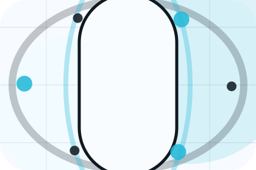

Context
Assessment gives the page a specific angle instead of repeating the navigation label.
Care / 01
Care opens as a clear healthcare decision hub: what Aster offers, who it helps, why it matters, and which route to take first.
The first screen combines positioning, proof, primary action, and fast internal navigation, so people can act immediately or compare the rest of the care route with context.
Body scan split hero
Select the closest route and Aster keeps the next step, proof, and follow-up expectation aligned with fear reduction and care confidence.
Care / 02
Concerns adds care context to the care route, using the scan-first health check journey structure to support fear reduction and care confidence before visitors choose a next step.
Aster uses rounded diagnostic data cards and focused copy to make the decision easier to scan, aligning the section with fear reduction and care confidence rather than filling space.
Explore CareConcerns gives the page a specific angle instead of repeating the navigation label.
The rounded diagnostic data cards show what to compare, what to avoid, and what matters most for healthcare, medical services & patient care visitors.
The final cue points to a useful internal route so the section keeps the journey moving.
Care / 03
Assessment adds care context to the care route, using the scan-first health check journey structure to support fear reduction and care confidence before visitors choose a next step.
Aster uses rounded diagnostic data cards and focused copy to make the decision easier to scan, aligning the section with fear reduction and care confidence rather than filling space.
Explore CareAssessment gives the page a specific angle instead of repeating the navigation label.
The rounded diagnostic data cards show what to compare, what to avoid, and what matters most for healthcare, medical services & patient care visitors.
The final cue points to a useful internal route so the section keeps the journey moving.
Care / 04
Diagnosis adds care context to the care route, using the scan-first health check journey structure to support fear reduction and care confidence before visitors choose a next step.
Aster uses rounded diagnostic data cards and focused copy to make the decision easier to scan, aligning the section with fear reduction and care confidence rather than filling space.
Explore CareDiagnosis gives the page a specific angle instead of repeating the navigation label.
Care / 06
Safety adds care context to the care route, using the scan-first health check journey structure to support fear reduction and care confidence before visitors choose a next step.
Aster uses rounded diagnostic data cards and focused copy to make the decision easier to scan, aligning the section with fear reduction and care confidence rather than filling space.
Explore CareSafety gives the page a specific angle instead of repeating the navigation label.
The rounded diagnostic data cards show what to compare, what to avoid, and what matters most for healthcare, medical services & patient care visitors.
The final cue points to a useful internal route so the section keeps the journey moving.
Care / 07
Support explains the practical scope, best-fit situations, and expected outcome so healthcare visitors can compare options without decoding jargon.
The section keeps the offer concrete: what is included, who it is best for, what decision it supports, and which linked route gives the deeper detail.
Open ContactAster structures support around best fit, what changes, and a clear next route so visitors can compare the block quickly before they book an appointment.
Book AppointmentCare / 09
Suitability adds care context to the care route, using the scan-first health check journey structure to support fear reduction and care confidence before visitors choose a next step.
Aster uses rounded diagnostic data cards and focused copy to make the decision easier to scan, aligning the section with fear reduction and care confidence rather than filling space.
Explore CareSuitability gives the page a specific angle instead of repeating the navigation label.
The rounded diagnostic data cards show what to compare, what to avoid, and what matters most for healthcare, medical services & patient care visitors.

The final cue points to a useful internal route so the section keeps the journey moving.
Care / 10
Aster closes the care route with a clear action, a quick reminder of the value, and a low-friction way to book an appointment.
Visitors who are ready can use the primary action. Visitors who are still comparing can scan the section links, proof, and support routes before they book an appointment.
Book AppointmentThe final block keeps the choice simple: act now, compare one more proof route, or send enough detail for a focused response.
Book Appointmentfear reduction and care confidence
A scan-first care journey with minimalist copy, body-data panels, instant-results proof, and a direct appointment CTA. Care ends with a direct path to book an appointment, plus enough context for visitors who still need to compare.
Information supports planning and is not a diagnosis or emergency instruction. People should use local emergency services for urgent symptoms.